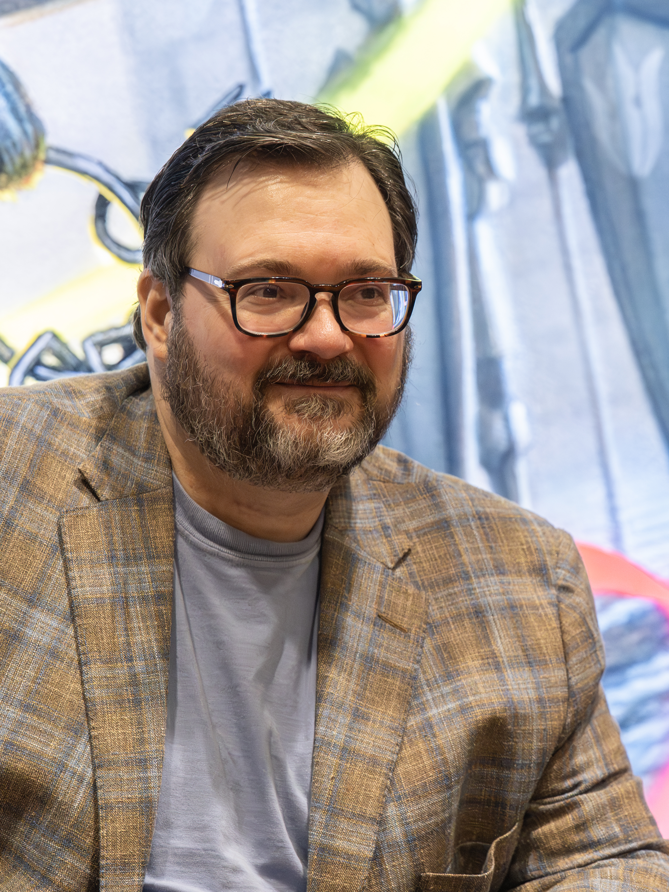

Sanderson(19 de Diciembre de 1975) es un reconocido escritor, principalmente conocido por sus sagas de libros Nacidos de la bruma y El Archivo de las tormentas.
Nacidos de la bruma compende los siguientes libros
El Archivo de las tormentas:
Tanto en Nacidos de la Bruma como El archivo de las tormentas, existen pequeñas historias recopiladas en un libro llamado ¡El Arcanum Ilimitado!
Estas historias añaden mucho a lore y aclaran algunas cuestiones que se dejaron abiertas en los libros principales.
A continuación se verán historias relacionadas a Nacidos de la Bruma y al Archivo de las tormentas.
| Nacidos de la Bruma | El Archivo de las Tormentas |
|---|---|
| El undécimo metal | Danzantes del filo |
| Alomante Jak | Esquirla del Amanecer |
| Historia Secreta | El Hombre Iluminado |
Es un escritor principalmente de fantasía, destacando en el world building, en crear personajes entrañables y creando sistemas mágicos interesantes
Tanto Nacidos de la Bruma, El Archivo de las Tormentas y otros de los libros de Sanderson, comparten universo, a este universo se le llama Cosmere,
y compende un montón de libros más, pero hay una guía muy práctica para el orden de lectura del Cosmere donde encontraras todo lo visto aquí y más:
aquí.